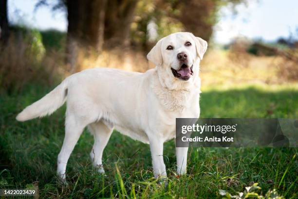

🐕 Meet the Breeds

{this.src='LEO.png'}"/>Labrador Retriever
"The world's most popular family dog!"
📖 History
Labs originally came from Newfoundland, Canada in the 1700s where they helped fishermen retrieve fishing nets and fish from icy waters. British nobles brought them to England and refined the breed in the 1800s. Today they're the #1 most popular dog breed in the USA for over 30 years straight!
- 🏊Labs have webbed toes — like flippers — making them amazing swimmers!
- 👃Their nose is 100,000× more powerful than a human's — they can sniff out cancer!
- 🎨Labs come in 3 colours: black, yellow, and chocolate.

Shih Tzu
"The royal lion dog of Chinese emperors!"
📖 History
Shih Tzus are one of the oldest dog breeds — they've existed for over 1,000 years! They were bred in the Forbidden City of China as companions for emperors and royalty. They were so precious that for centuries, China refused to sell or give them to foreigners. They only reached Europe in the 1930s!
- 👑Name means "Little Lion" in Chinese — bold in a tiny body!
- 💇They have hair, not fur — it keeps growing like human hair!
- 🤧Great for people with allergies — they shed very little!

Pug
"The comedian of the dog world!"
📖 History
Pugs are one of the oldest dog breeds, dating back over 2,000 years to ancient China! Like Shih Tzus, they were treasured pets of Chinese emperors. They travelled to Europe in the 16th century and became fashionable among royals — even saving the life of a Dutch prince by barking to warn him of enemy soldiers!
- 😴Pugs can sleep up to 14 hours a day — and they snore loudly!
- 🤣A group of pugs is called a "grumble" — perfect for their grumpy faces!
- 🎬Pugs have starred in Men in Black, The Adventures of Milo and Otis, and many more!

Siberian Husky
"The Arctic explorer's ultimate companion!"
📖 History
Siberian Huskies were bred over 3,000 years ago by the Chukchi people of Siberia to pull sleds across snow. In 1925, a team of Huskies made a heroic 674-mile sled run to deliver medicine to a diphtheria outbreak in Nome, Alaska — a journey now celebrated by the Iditarod race every year!
- 👁️Can have two different eye colours (heterochromia) — one blue, one brown!
- 🛷Can run over 100 miles in a single day pulling a sled in freezing snow!
- 🗣️Huskies "talk" — they howl, whine and make sounds almost like words!

Golden Retriever
"Forever happy, forever loyal!"
📖 History
Golden Retrievers were first bred in the Scottish Highlands in the 1860s by Lord Tweedmouth. He wanted a dog that could retrieve shot birds from both land and water without damaging them. The breed was officially recognised by the Kennel Club in 1911. Today they are one of the top 3 most popular breeds worldwide!
- 😊Their tail is almost always wagging — they love absolutely everyone!
- 🦮One of the most common guide dogs for visually impaired people.
- 🎾"Retriever" means they carry things without biting down — super gentle mouths!